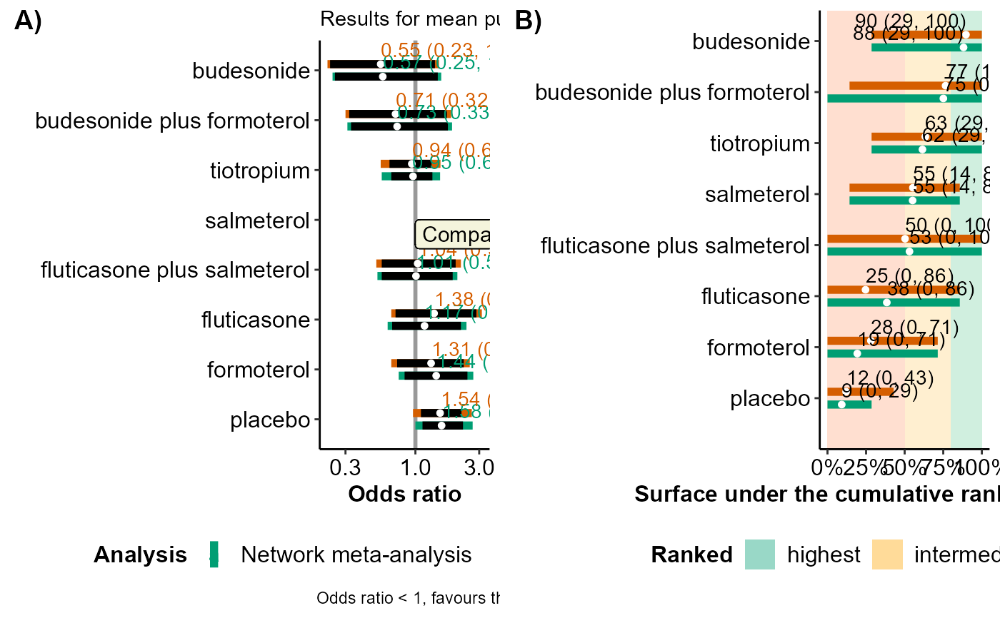
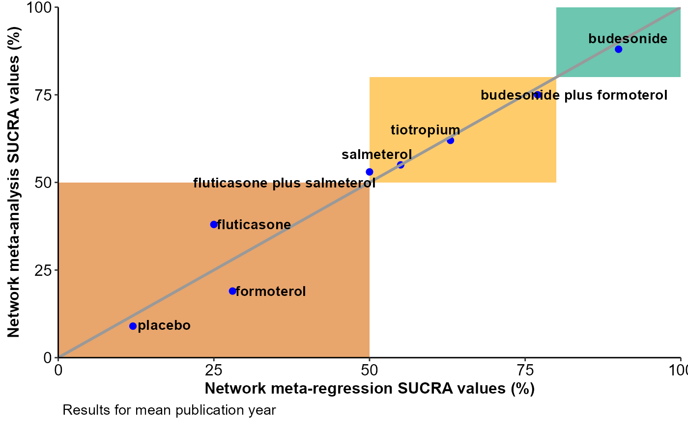

R/metareg.plot_function.R
metareg_plot.RdIllustrates the effect estimates, predictions and regression coefficients of comparisons with a specific comparator and also exports these results to an Excel format.
metareg_plot(full, reg, compar, cov_value, drug_names, save_xls)
| full | |
|---|---|
| reg | An object of S3 class |
| compar | A character to indicate the comparator intervention. It must be
any name found in |
| cov_value | A list of two elements in the following order: a number
for the covariate value of interest (see 'Arguments' in
|
| drug_names | A vector of labels with the name of the interventions in
the order they appear in the argument |
| save_xls | Logical to indicate whether to export the tabulated results
to an 'xlsx' file (via the |
metareg_plot prints on the R console a message on the most
parsimonious model (if any) based on the deviance information criterion
(DIC; in red text). Furthermore, the function returns the following list of
elements:
table_estimates | The posterior mean, and 95% credible interval
of the summary effect measure (according to the argument measure
defined in run_model) for each comparison with the selected
intervention under network meta-analysis and network meta-regression
based on the specified cov_value. |
table_predictions | The posterior mean, and 95% predictive
interval of the summary effect measure (according to the argument
measure defined in run_model) for each comparison
with the selected intervention under network meta-analysis and network
meta-regression based on the specified cov_value. |
table_model_assessment | The DIC, total residual deviance,
number of effective parameters, and the posterior median and 95% credible
interval of between-trial standard deviation (tau) under each model
(Spiegelhalter et al., (2002)). When a fixed-effect model has been
performed, metareg_plot does not return results on tau. |
table_regression_coeffients | The posterior mean and 95% credible interval of the regression coefficient(s). |
interval_plots | The panel of forest-plots on the estimated and
predicted effect sizes of comparisons with the selected intervention under
network meta-analysis and network meta-regression based on the specified
cov_value. See 'Details' and 'Value' in
forestplot_metareg. |
sucra_scatterplot | A scatterplot of the SUCRA values from the
network meta-analysis against the SUCRA values from the network
meta-regression based on the specified cov_value. See 'Details'
and 'Value' in scatterplot_sucra. |
The DIC of the network meta-analysis model is compared with the DIC of the network meta-regression model. If the difference in DIC exceeds 5, the network meta-regression model is preferred; if the difference in DIC is less than -5, the network meta-analysis model is preferred; otherwise, there is little to choose between the compared models.
When the covariate is binary, specify in the second element of
cov_value the name of the level for which the output will be
created.
Furthermore, metareg_plot exports all tabulated results to separate
'xlsx' files (via the write_xlsx function)
to the working directory of the user.
metareg_plot can be used only for a network of interventions. In the
case of two interventions, the execution of the function will be stopped
and an error message will be printed on the R console.
Salanti G, Ades AE, Ioannidis JP. Graphical methods and numerical summaries for presenting results from multiple-treatment meta-analysis: an overview and tutorial. J Clin Epidemiol 2011;64(2):163--71. doi: 10.1016/j.jclinepi.2010.03.016
Spiegelhalter DJ, Best NG, Carlin BP, van der Linde A. Bayesian measures of model complexity and fit. J R Stat Soc B 2002;64:583--616. doi: 10.1111/1467-9868.00353
Loukia M. Spineli
data("nma.baker2009") # Read results from 'run_model' (using the default arguments) res <- readRDS(system.file('extdata/res_baker.rds', package = 'rnmamod')) # Read results from 'run_metareg' (exchangeable structure) reg <- readRDS(system.file('extdata/reg_baker.rds', package = 'rnmamod')) # Publication year as the covariate pub_year <- c(1996, 1998, 1999, 2000, 2000, 2001, rep(2002, 5), 2003, 2003, rep(2005, 4), 2006, 2006, 2007, 2007) # The names of the interventions in the order they appear in the dataset interv_names <- c("placebo", "budesonide", "budesonide plus formoterol", "fluticasone", "fluticasone plus salmeterol", "formoterol", "salmeterol", "tiotropium") # Plot the results from both models for all comparisons with salmeterol and # publication year 2000 metareg_plot(full = res, reg = reg, compar = "salmeterol", cov_value = list(2000, "publication year"), drug_names = interv_names) #> There is little to choose between the two models #> $table_estimates #> #> #> |versus salmeterol | Mean NMA|95% CrI NMA | Mean NMR|95% CrI NMR | #> |:---------------------------|--------:|:-------------|--------:|:-------------| #> |budesonide | 0.57|(0.25, 1.45) | 0.55|(0.16, 1.85) | #> |budesonide plus formoterol | 0.76|(0.36, 1.69) | 0.73|(0.22, 2.49) | #> |tiotropium | 0.95|(0.66, 1.32) | 1.01|(0.63, 1.63) | #> |fluticasone plus salmeterol | 0.99|(0.56, 1.85) | 1.22|(0.52, 2.86) | #> |fluticasone | 1.19|(0.7, 2.2) | 1.31|(0.57, 2.98) | #> |formoterol | 1.44|(0.82, 2.41) | 1.09|(0.49, 2.43) | #> |placebo | 1.60|(1.15, 2.25)* | 1.70|(1.09, 2.65)* | #> #> $table_predictions #> #> #> |versus salmeterol | Mean NMA|95% CrI NMA | Mean NMR|95% CrI NMR | #> |:---------------------------|--------:|:-------------|--------:|:------------| #> |budesonide | 0.57|(0.23, 1.54) | 0.55|(0.16, 1.94) | #> |budesonide plus formoterol | 0.76|(0.34, 1.84) | 0.73|(0.21, 2.62) | #> |tiotropium | 0.95|(0.57, 1.52) | 1.01|(0.56, 1.83) | #> |fluticasone plus salmeterol | 0.99|(0.5, 2.02) | 1.22|(0.48, 3.06) | #> |fluticasone | 1.19|(0.64, 2.42) | 1.31|(0.53, 3.21) | #> |formoterol | 1.44|(0.75, 2.65) | 1.09|(0.46, 2.62) | #> |placebo | 1.59|(1.01, 2.64)* | 1.70|(0.96, 3) | #> #> $table_model_assessment #> #> #> |Analysis | DIC| Mean deviance| pD|Median tau |SD tau |95% CrI tau | #> |:---------------------|-----:|-------------:|-----:|:----------|:------|:------------| #> |Network meta-analysis | 88.81| 54.05| 34.76|0.14 |0.09 |(0.01, 0.34) | #> |Meta-regression | 91.23| 53.93| 37.30|0.14 |0.1 |(0, 0.37) | #> #> $table_regression_coeffients #> #> #> |versus salmeterol | Mean beta|95% CrI beta | #> |:---------------------------|---------:|:------------| #> |budesonide | 1.00|(0.74, 1.42) | #> |budesonide plus formoterol | 1.00|(0.72, 1.41) | #> |tiotropium | 0.97|(0.86, 1.07) | #> |fluticasone plus salmeterol | 0.95|(0.75, 1.11) | #> |fluticasone | 1.03|(0.9, 1.23) | #> |formoterol | 1.06|(0.91, 1.37) | #> |placebo | 0.96|(0.88, 1.06) | #> #> $interval_plots  #> #> $sucra_scatterplot  #>